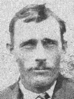

GMBH Tree - Person Sheet
GMBH Tree - Person Sheet


Burial1 May 1946, Nipawin, Saskatchewan, Canada2371
OccupationFish Curer, Farmer1694
FatherJohann Hoppe (1859-1902)
MotherWilhelmina Hagel (1845-1938)
Spouses
Birth10 Mar 1882, Burlinske, Goberny, Poland
Death25 Sep 1920, Watrous, Saskatchewan, Canada
ReligionLutheran1730
FatherStanislaus Reimer (1859-1940)
MotherWilhelmina Ratke (1862-1899)
OccupationHousewife
ReligionLutheran
FatherJacob D. Waldner (1883-1958)
MotherMaria (Mary) Janzen (1884-1959)
Marriage193467
ChildrenArthur (1927-2001)
Walter Frank (1932-2018)
Lydia (1933-2019)
Daniel Frederick (1936-1999)
Bruce (1937-2006)
Notes for Ferdinand (Fred) Hoppe
Immigration Ship: Montfort, departed from Liverpool, England